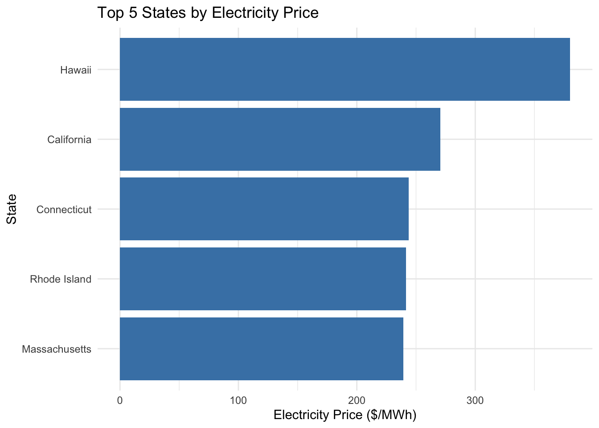
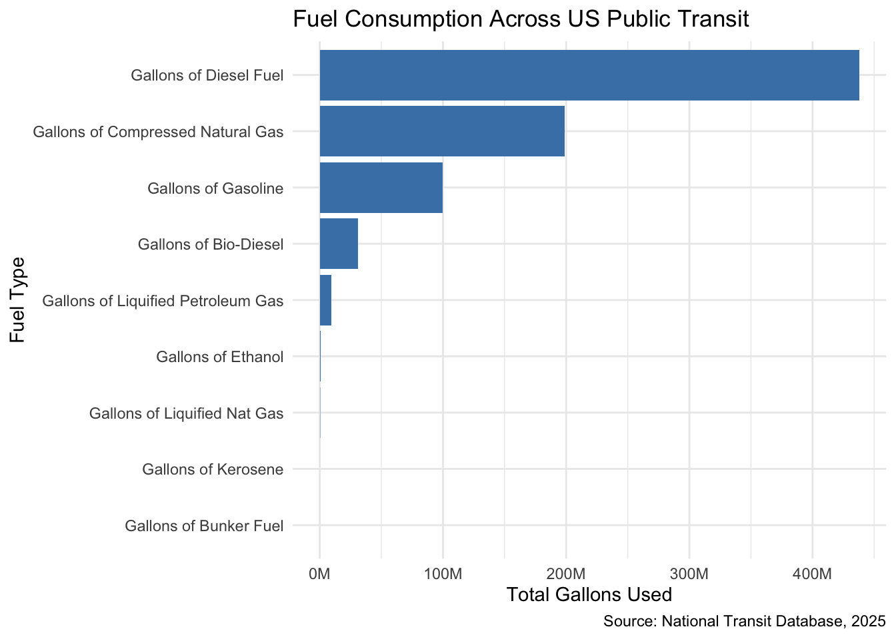
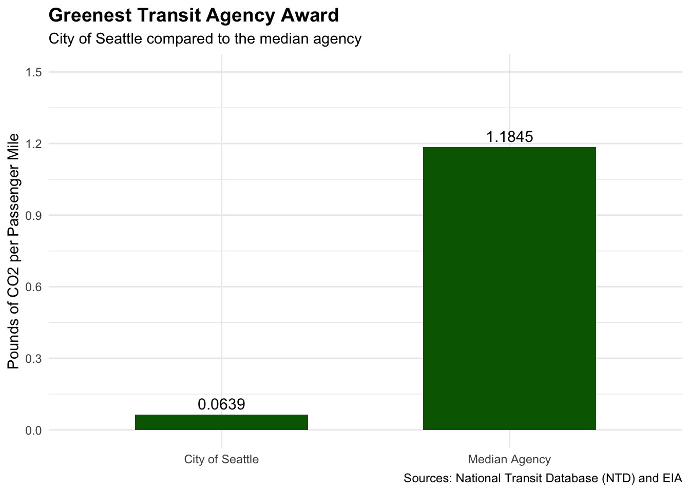
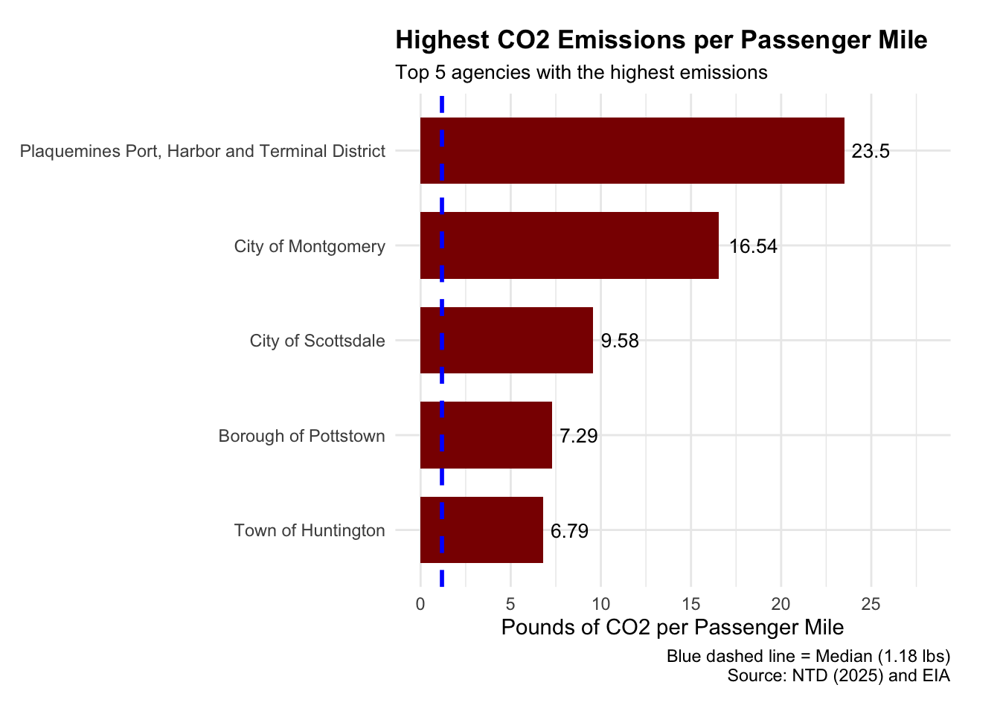

Show Code
# Load required packages
library(tidyverse)
library(stringr)
library(httr2)
library(rvest)
library(readxl)
library(fs)
library(scales)STA 9750 Mini-Project #02
Maria Rashid
The data was acquired from the EIA website that combined all information into one data set on all 50 states, including CO₂ emissions, primary energy sources, electricity prices, and total electricity generation.
get_eia_sep <- function(state, abbr) {
library(tidyverse)
library(stringr)
library(httr2)
library(rvest)
state_formatted <- str_to_lower(state) |>
str_replace_all("\\s", "")
dir_name <- file.path("data", "mp02")
file_name <- file.path(dir_name, state_formatted)
dir.create(dir_name, showWarnings = FALSE,
recursive = TRUE)
if (!file.exists(file_name)) {
BASE_URL <- "https://www.eia.gov"
RESPONSE <- request(BASE_URL) |>
req_url_path(
"electricity",
"state",
state_formatted
) |>
req_headers(
`User-Agent` =
"Mozilla/5.0 (Macintosh; Intel Mac OS X 10.15; rv:149.0) Gecko/20100101 Firefox/149.0"
) |>
req_perform(file_name)
resp_check_status(RESPONSE)
}
TABLE <- read_html(file_name) |>
html_element("table") |>
html_table() |>
mutate(Item = str_to_lower(Item))
if ("U.S. rank" %in% colnames(TABLE)) {
TABLE <- TABLE |>
rename(Rank = `U.S. rank`)
}
CO2_MWh <- TABLE |>
filter(Item == "carbon dioxide (lbs/mwh)") |>
pull(Value) |>
str_replace_all(",", "") |>
as.numeric()
PRIMARY <- TABLE |>
filter(Item == "primary energy source") |>
pull(Rank)
RATE <- TABLE |>
filter(Item == "average retail price (cents/kwh)") |>
pull(Value) |>
as.numeric()
GENERATION_MWh <- TABLE |>
filter(Item == "net generation (megawatthours)") |>
pull(Value) |>
str_replace_all(",", "") |>
as.numeric()
data.frame(
CO2_MWh = CO2_MWh,
primary_source = PRIMARY,
electricity_price_MWh = RATE * 10,
generation_MWh = GENERATION_MWh,
state = state,
abbreviation = abbr
)
}
EIA_SEP_REPORT <- map2(
state.name,
state.abb,
get_eia_sep
) |>
list_rbind()load_ntd_energy <- function(){
library(readxl)
library(httr2)
library(tidyverse)
library(fs)
DATA_DIR <- file.path("data", "mp02")
dir.create(DATA_DIR, showWarnings=FALSE, recursive=TRUE)
NTD_ENERGY_FILE <- file.path(DATA_DIR, "2025_ntd_energy.xlsx")
if(!file.exists(NTD_ENERGY_FILE)){
library(httr2)
request("https://www.transit.dot.gov/sites/fta.dot.gov/files/2026-09/2025%20Energy%20Consumption_260806.xlsx") |>
req_headers(
`User-Agent` = "Mozilla/5.0 (Macintosh; Intel Mac OS X 10.15; rv:149.0) Gecko/20100101 Firefox/149.0") |>
req_perform(NTD_ENERGY_FILE)
}
if(file.info(NTD_ENERGY_FILE)$size < 1e4){
cat("I was unable to download the NTD Energy File. Please try again.\n")
stop("Download failed. Please delete corrupted file and try again.")
}
to_numeric_fill_0 <- function(x){
x <- if_else(x == "-", NA, x)
replace_na(as.numeric(x), 0)
}
read_excel(NTD_ENERGY_FILE) |>
select(-c(`Reporter Type`,
`Reporting Module`,
`Gallons of Other Fuel`,
`Other Fuel Description`)) |>
mutate(across(-c(`Agency Name`,
`Mode`,
`TOS`),
to_numeric_fill_0)) |>
group_by(`NTD ID`, `Mode`, `Agency Name`) |>
summarize(across(where(is.numeric), sum),
.groups = "keep") |>
mutate(ENERGY = sum(c_across(c(where(is.numeric))))) |>
filter(ENERGY > 0) |>
select(-ENERGY) |>
ungroup()
}
NTD_ENERGY <- load_ntd_energy()load_ntd_service <- function() {
library(httr2)
library(tidyverse)
library(fs)
DATA_DIR <- file.path("data", "mp02")
dir.create(DATA_DIR, showWarnings = FALSE, recursive = TRUE)
NTD_SERVICE_FILE <- file.path(DATA_DIR, "2025_ntd_service.csv")
# Download data only if the file does not exist
if (!file.exists(NTD_SERVICE_FILE)) {
request("https://data.transportation.gov/resource/4fir-qbim.csv") |>
req_url_query(`$query` = paste(
"SELECT `_5_digit_ntd_id` AS `NTD_ID`",
"`max_agency` AS `AGENCY`",
"`max_reporter_type` AS `reporter_type`",
"`max_organization_type` AS `organization_type`",
"`max_city` AS `city`",
"`max_state` AS `state`",
"`mode`",
"`type_of_service`",
"`max_primary_uza_code` as `uza_code`",
"`max_primary_uza_name` as `uza_name`",
"`max_primary_uza_area_sq_miles` as `uza_sq_miles`",
"`max_primary_uza_population` as `uza_population`",
"`max_service_area_sq_miles` as `service_area_sq_miles`",
"`max_service_area_population` as `service_area_population`",
"`questionable_record` as `flagged_likely_inaccurate`",
"`sum_unlinked_passenger_trips_upt` as `total_upt`",
"`sum_passenger_miles` WHERE caseless_one_of(`report_year`, '2025') limit 50000",
sep = ","
)) |>
req_headers(
`User-Agent` = "Mozilla/5.0 (Macintosh; Intel Mac OS X 10.15; rv:149.0) Gecko/20100101 Firefox/149.0"
) |>
req_perform(path = NTD_SERVICE_FILE)
}
if (file.info(NTD_SERVICE_FILE)$size < 1e4) {
cat("I was unable to download the NTD Service File. Please try again.\n")
stop("Download failed. Please delete corrupted file and try again.")
}
read_csv(
NTD_SERVICE_FILE,
col_types = cols(
total_upt = col_character(),
.default = col_guess()
)
) |>
mutate(
total_upt = parse_number(total_upt),
flagged_likely_inaccurate = !is.na(flagged_likely_inaccurate)
)
}
NTD_SERVICE <- load_ntd_service()
NTD_SERVICE_FIXED <- NTD_SERVICEThe data was cleaned and organized, making it easier to understand. By changing the abbreviations into their full names, this makes it easier to identify the different transportation modes when performing the analysis.
NTD_ENERGY <- load_ntd_energy() |>
mutate(
Mode = recode(
Mode,
"DR" = "Demand Response",
"FB" = "Ferryboat",
"MB" = "Motor Bus",
"SR" = "Streetcar Rail",
"TB" = "Trolleybus",
"VP" = "Vanpool",
"CB" = "Commuter Bus",
"RB" = "Bus Rapid Transit",
"LR" = "Light Rail",
"MG" = "Monorail/Automated Guideway",
"CR" = "Commuter Rail",
"AR" = "Alaska Railroad",
"TR" = "Aerial Tramway",
"HR" = "Heavy Rail",
"YR" = "Hybrid Rail",
"IP" = "Inclined Plane",
"CC" = "Cable Car",
.default = "Unknown"
)
)top_5_expensive <- EIA_SEP_REPORT |>
arrange(desc(electricity_price_MWh)) |>
slice_head(n = 5)
ggplot(top_5_expensive,
aes(x = reorder(state, electricity_price_MWh),
y = electricity_price_MWh)) +
geom_col(fill = "steelblue") +
coord_flip() +
labs(
title = "Top 5 States by Electricity Price",
x = "State",
y = "Electricity Price ($/MWh)"
) +
theme_minimal()
The 5 states that have the most expensive retail electricity are Hawaii, California, Connecticut, Rhode Island, Massachusetts.
dirtiest_states <- EIA_SEP_REPORT |>
arrange(desc(CO2_MWh)) |>
slice_head(n = 5) |>
select(state, CO2_MWh, primary_source)
knitr::kable(
dirtiest_states |>
mutate(CO2_MWh = scales::comma(CO2_MWh)),
col.names = c(
"State",
"CO2 Emissions (lbs/MWh)",
"Primary Energy Source"
),
caption = "Five States with the Dirtiest Electricity Mix"
)| State | CO2 Emissions (lbs/MWh) | Primary Energy Source |
|---|---|---|
| West Virginia | 1,912 | Coal |
| Kentucky | 1,744 | Coal |
| Wyoming | 1,724 | Coal |
| Missouri | 1,456 | Coal |
| Hawaii | 1,426 | Petroleum |
The 5 states with the ‘dirtiest’ electricity mix are West Virginia, Kentucky, Wyoming, Missouri, and Hawaii.
[1] 784.8565There is approximately 784.86 pounds of CO2 that are emitted per MWh of electricity produced in the US.
EIA_SEP_REPORT |>
add_count(primary_source, name = "state_count") |>
arrange(state_count, primary_source) |>
filter(primary_source %in% (
EIA_SEP_REPORT |>
count(primary_source, sort = FALSE) |>
arrange(n, primary_source) |>
slice_head(n = 3) |>
pull(primary_source)
)) |>
select(primary_source, state, electricity_price_MWh) |>
arrange(primary_source, state) |>
knitr::kable(
col.names = c("Energy Source", "State", "Electricity Price ($/MWh)"),
caption = "Three Rarest Primary Energy Sources"
)| Energy Source | State | Electricity Price ($/MWh) |
|---|---|---|
| Hydroelectric | Idaho | 95.1 |
| Hydroelectric | Oregon | 111.1 |
| Hydroelectric | Vermont | 184.1 |
| Hydroelectric | Washington | 101.3 |
| Petroleum | Hawaii | 380.0 |
| Wind | Iowa | 93.4 |
| Wind | Kansas | 112.1 |
| Wind | New Mexico | 91.8 |
| Wind | South Dakota | 108.7 |
The three rarest Primary Energy Sources are Petroleum, Hydroelectric, Wind. This table gave us insight on what energy source was used in each state and there electricity price.
[1] 1.532588Based on the data, when comparing New York’s and Texas’s electricity mixes, New York’s energy mix is about 1.53 times cleaner than Texas.
top_5_agencies <- NTD_ENERGY |>
select(`Agency Name`, starts_with("Gallons of")) |>
group_by(`Agency Name`) |>
summarize(across(where(is.numeric), sum), .groups = "drop") |>
mutate(
total_gallons = rowSums(across(starts_with("Gallons of")))
) |>
slice_max(total_gallons, n = 5)
top_5_agencies |>
pivot_longer(
cols = starts_with("Gallons of"),
names_to = "Fuel Type",
values_to = "Gallons"
) |>
filter(Gallons > 0) |>
arrange(desc(total_gallons), desc(Gallons)) |>
select(`Agency Name`, `Fuel Type`, Gallons) |>
mutate(Gallons = scales::comma(Gallons)) |>
knitr::kable(
col.names = c("Transit Agency", "Fuel Type", "Gallons Used"),
caption = "Top Five Transit Agencies by Total Fuel Consumption"
)| Transit Agency | Fuel Type | Gallons Used |
|---|---|---|
| New Jersey Transit Corporation | Gallons of Diesel Fuel | 38,144,027 |
| New Jersey Transit Corporation | Gallons of Gasoline | 2,055,895 |
| New Jersey Transit Corporation | Gallons of Compressed Natural Gas | 1,521,492 |
| MTA New York City Transit | Gallons of Diesel Fuel | 30,217,934 |
| MTA New York City Transit | Gallons of Compressed Natural Gas | 6,328,381 |
| MTA New York City Transit | Gallons of Gasoline | 4,270,146 |
| Los Angeles County Metropolitan Transportation Authority | Gallons of Compressed Natural Gas | 30,410,141 |
| Los Angeles County Metropolitan Transportation Authority | Gallons of Gasoline | 994,810 |
| Northeast Illinois Regional Commuter Railroad Corporation | Gallons of Diesel Fuel | 26,829,691 |
| Massachusetts Bay Transportation Authority | Gallons of Diesel Fuel | 20,627,960 |
| Massachusetts Bay Transportation Authority | Gallons of Compressed Natural Gas | 1,534,123 |
| Massachusetts Bay Transportation Authority | Gallons of Gasoline | 1,290,452 |
This table shows the the top 5 transit agencies agencies by the total fuel consumption. To calculate the total gallon used we added together all fuel types for each agency. The results were arranged fro highest to lowest fuel consumption by the fuel type.
NTD_ENERGY |>
select(starts_with("Gallons of")) |>
summarize(across(everything(), sum, na.rm = TRUE)) |>
pivot_longer(
cols = everything(),
names_to = "Fuel Type",
values_to = "Total Gallons"
) |>
ggplot(aes(x = reorder(`Fuel Type`, `Total Gallons`),
y = `Total Gallons`)) +
geom_col(fill = "steelblue") +
coord_flip() +
labs(
title = "Fuel Consumption Across US Public Transit",
x = "Fuel Type",
y = "Total Gallons Used",
caption = "Source: National Transit Database, 2025"
) +
scale_y_continuous(labels = scales::label_number(scale = 1e-6, suffix = "M")) +
theme_minimal()
This bar graph shows the the different fuel types and how much total gallons were used by each type. The total gallons used were calculated by adding together the gallons for each fuel type across all the agencies.
[1] 3.180449The average trip length of a trip on MTA NYC is approximately 3.18 miles.
library(tidyverse)
service_data <- NTD_SERVICE |>
transmute(
NTD_ID = str_pad(as.character(NTD_ID), 5, pad = "0"),
Mode = mode,
state = state
) |>
distinct(NTD_ID, Mode, .keep_all = TRUE)
agency_states <- NTD_SERVICE |>
transmute(
NTD_ID = str_pad(as.character(NTD_ID), 5, pad = "0"),
state = state
) |>
filter(!is.na(state)) |>
distinct() |>
group_by(NTD_ID) |>
filter(n_distinct(state) == 1) |>
ungroup() |>
rename(agency_state = state)
energy_data <- NTD_ENERGY |>
mutate(
`NTD ID` = str_pad(as.character(`NTD ID`), 5, pad = "0"),
Mode = recode(
Mode,
"Aerial Tramway" = "AR",
"Alaska Railroad" = "AR",
"Bus Rapid Transit" = "RB",
"Cable Car" = "CC",
"Commuter Bus" = "CB",
"Commuter Rail" = "CR",
"Demand Response" = "DR",
"Ferryboat" = "FB",
"Heavy Rail" = "HR",
"Hybrid Rail" = "YR",
"Inclined Plane" = "IP",
"Light Rail" = "LR",
"Monorail/Automated Guideway" = "MG",
"Motor Bus" = "MB",
"Streetcar Rail" = "SR",
"Trolleybus" = "TB",
"Vanpool" = "VP"
)
)
combined_data <- energy_data |>
left_join(
service_data,
by = c("NTD ID" = "NTD_ID", "Mode" = "Mode")
) |>
left_join(
agency_states,
by = c("NTD ID" = "NTD_ID")
) |>
mutate(
state = coalesce(state, agency_state)
) |>
select(-agency_state) |>
left_join(
EIA_SEP_REPORT |>
select(abbreviation, CO2_MWh),
by = c("state" = "abbreviation")
)
combined_data |>
summarize(
total_rows = n(),
missing_states = sum(is.na(state)),
missing_co2 = sum(is.na(CO2_MWh)),
duplicate_agency_modes = n() -
n_distinct(`NTD ID`, Mode)
)# A tibble: 1 × 4
total_rows missing_states missing_co2 duplicate_agency_modes
<int> <int> <int> <int>
1 1134 0 11 0The combined data including EIA electricity data, NTD energy consumption data, and NTD transit service data, contained 1,134 records of transit agencies and transportation modes.
By calculating the CO2 fuel emissions and electricity usage, we are able to analyze how much CO2 emissions is produced by each transit agency. Using the glimpse function, we are given an overview of the data set’s dimensions, column names, data types, and sample records.
emissions_data <- combined_data |>
mutate(
fuel_emissions_lbs =
coalesce(`Gallons of Diesel Fuel`, 0) * 22.45 +
coalesce(`Gallons of Gasoline`, 0) * 20.86 +
coalesce(`Gallons of Compressed Natural Gas`, 0) * 20.86 +
coalesce(`Gallons of Liquified Nat Gas`, 0) * 9.75 +
coalesce(`Gallons of Liquified Petroleum Gas`, 0) * 12.68 +
coalesce(`Gallons of Bio-Diesel`, 0) * 0 +
coalesce(`Gallons of Ethanol`, 0) * 0 +
coalesce(`Kilograms of Hydrogen`, 0) * 0,
electricity_MWh =
(
coalesce(`Kilowatt hours of Electric Battery`, 0) +
coalesce(`Kilowatt hours of Electric Propulsion`, 0)
) / 1000,
electricity_emissions_lbs = if_else(
electricity_MWh == 0,
0,
electricity_MWh * CO2_MWh
),
total_emissions_lbs =
fuel_emissions_lbs + electricity_emissions_lbs
)
glimpse(emissions_data)Rows: 1,134
Columns: 22
$ `NTD ID` <chr> "00001", "00001", "00001", "00…
$ Mode <chr> "DR", "FB", "MB", "SR", "TB", …
$ `Agency Name` <chr> "King County", "King County", …
$ `Gallons of Bio-Diesel` <dbl> 0, 0, 139825, 0, 0, 0, 0, 0, 0…
$ `Bio-Diesel Description` <dbl> 0, 0, 0, 0, 0, 0, 0, 0, 0, 0, …
$ `Gallons of Bunker Fuel` <dbl> 0, 0, 0, 0, 0, 0, 0, 0, 0, 0, …
$ `Gallons of Compressed Natural Gas` <dbl> 0, 0, 0, 0, 0, 0, 0, 0, 0, 142…
$ `Gallons of Diesel Fuel` <dbl> 0, 288130, 9072034, 0, 0, 0, 3…
$ `Kilowatt hours of Electric Battery` <dbl> 0, 0, 2203762, 0, 0, 20111, 0,…
$ `Kilowatt hours of Electric Propulsion` <dbl> 0, 0, 0, 2103938, 11463511, 0,…
$ `Gallons of Ethanol` <dbl> 0, 0, 0, 0, 0, 0, 0, 0, 0, 0, …
$ `Gallons of Gasoline` <dbl> 1030289, 0, 196299, 0, 0, 4678…
$ `Kilograms of Hydrogen` <dbl> 0, 0, 0, 0, 0, 0, 0, 0, 0, 0, …
$ `Gallons of Kerosene` <dbl> 0, 0, 0, 0, 0, 0, 0, 0, 0, 0, …
$ `Gallons of Liquified Nat Gas` <dbl> 0, 0, 0, 0, 0, 0, 0, 0, 0, 0, …
$ `Gallons of Liquified Petroleum Gas` <dbl> 399385, 0, 0, 0, 0, 0, 0, 0, 0…
$ state <chr> "WA", "WA", "WA", "WA", "WA", …
$ CO2_MWh <dbl> 249, 249, 249, 249, 249, 249, …
$ fuel_emissions_lbs <dbl> 26556030.3, 6468518.5, 2077619…
$ electricity_MWh <dbl> 0.000, 0.000, 2203.762, 2103.9…
$ electricity_emissions_lbs <dbl> 0.000, 0.000, 548736.738, 5238…
$ total_emissions_lbs <dbl> 26556030.3, 6468518.5, 2083106…I combined the total CO₂ emissions and total passenger usage data, which will be useful when comparing how much CO₂ each transit agency produces per passenger trip and per passenger mile.
agency_emissions <- emissions_data |>
group_by(`NTD ID`, `Agency Name`) |>
summarize(
total_emissions = if (
all(is.na(total_emissions_lbs))
) NA_real_ else sum(total_emissions_lbs, na.rm = TRUE),
missing_emissions = any(is.na(total_emissions_lbs)),
.groups = "drop"
)
agency_usage <- NTD_SERVICE_FIXED |>
mutate(
NTD_ID = stringr::str_pad(as.character(NTD_ID), 5, pad = "0")
) |>
group_by(NTD_ID) |>
summarize(
total_upt = sum(total_upt, na.rm = TRUE),
total_passenger_miles = sum(sum_passenger_miles, na.rm = TRUE),
.groups = "drop"
)
agency_efficiency <- agency_emissions |>
left_join(
agency_usage,
by = c("NTD ID" = "NTD_ID")
) |>
mutate(
emissions_per_upt = if_else(
total_upt > 0 & !missing_emissions,
total_emissions / total_upt,
NA_real_
),
emissions_per_passenger_mile = if_else(
total_passenger_miles > 0 & !missing_emissions,
total_emissions / total_passenger_miles,
NA_real_
)
)
glimpse(agency_efficiency)Rows: 522
Columns: 8
$ `NTD ID` <chr> "00001", "00002", "00003", "00005", "0000…
$ `Agency Name` <chr> "King County", "Spokane Transit Authority…
$ total_emissions <dbl> 254477545, 35726739, 38624430, 6827007, 4…
$ missing_emissions <lgl> FALSE, FALSE, FALSE, FALSE, FALSE, FALSE,…
$ total_upt <dbl> 94432090, 10941746, 7836318, 1820550, 739…
$ total_passenger_miles <dbl> 330730621, 55069543, 47322210, 6234548, 3…
$ emissions_per_upt <dbl> 2.69482064, 3.26517713, 4.92890026, 3.749…
$ emissions_per_passenger_mile <dbl> 0.76944053, 0.64875677, 0.81620089, 1.095…By calculating CO₂ per trip and calculating CO₂ per passenger mile, we are able to compare and rank agencies from lowest to highest emissions. Based on the data, the City of Seattle is most efficient for both per trip and per passenger mile measures. The agency had about 0.0639 pounds of CO2 per passenger mile and 0.0575 pounds of CO₂ per passenger trip.
| Agency Name | total_upt | emissions_per_upt |
|---|---|---|
| City of Seattle | 2292743 | 0.058 |
| Champaign-Urbana Mass Transit District | 11386376 | 0.153 |
| University of Minnesota | 2396520 | 0.174 |
| Anaheim Transportation Network | 8284155 | 0.219 |
| City of Portland | 4111090 | 0.246 |
| City of Milwaukee | 494557 | 0.317 |
| Tri-County Metropolitan Transportation District of Oregon | 65782710 | 0.411 |
| University of Kansas | 1557664 | 0.467 |
| Muncie Indiana Transit System | 928700 | 0.508 |
| Metro Transit | 51012611 | 0.512 |
agency_efficiency |>
filter(
total_passenger_miles >= 100000,
total_emissions > 0,
!is.na(emissions_per_passenger_mile)
) |>
arrange(emissions_per_passenger_mile) |>
select(
`Agency Name`,
total_passenger_miles,
emissions_per_passenger_mile
) |>
head(10) |>
knitr::kable(
digits = 3,
caption = "Most Efficient Agencies by CO2 per Passenger Mile"
)| Agency Name | total_passenger_miles | emissions_per_passenger_mile |
|---|---|---|
| City of Seattle | 2063469 | 0.064 |
| University of Minnesota | 4505458 | 0.092 |
| Champaign-Urbana Mass Transit District | 17533911 | 0.100 |
| Tri-County Metropolitan Transportation District of Oregon | 270786952 | 0.100 |
| Muncie Indiana Transit System | 3689277 | 0.128 |
| Jefferson Parish | 7537926 | 0.130 |
| Metro Transit | 192044323 | 0.136 |
| Adirondack Transit Lines, Inc. | 31332336 | 0.146 |
| San Francisco Bay Area Rapid Transit District | 804179562 | 0.151 |
| Pima Association of Governments | 1886157 | 0.153 |
greenest_agencies <- agency_efficiency |>
filter(
total_passenger_miles >= 100000,
total_emissions > 0,
!is.na(emissions_per_passenger_mile)
) |>
arrange(emissions_per_passenger_mile)
greenest_winner <- greenest_agencies |>
slice(1)
greenest_median <- median(
greenest_agencies$emissions_per_passenger_mile,
na.rm = TRUE
)
greenest_winner |>
select(
`Agency Name`,
emissions_per_passenger_mile
) |>
knitr::kable(
digits = 4,
caption = "Greenest Transit Agency Award"
)| Agency Name | emissions_per_passenger_mile |
|---|---|
| City of Seattle | 0.0639 |
[1] 1.184515Based on the results, City of Seattle was the greenest transit agency producing 0.0639 pounds of CO2 per passenger mile. The median agency produced 1.1845 pounds of CO2 per passenger mile.
least_efficient_agencies <- agency_efficiency |>
filter(
total_passenger_miles >= 100000,
total_emissions > 0,
!is.na(emissions_per_passenger_mile)
) |>
arrange(desc(emissions_per_passenger_mile))
least_efficient_winner <- least_efficient_agencies |>
slice(1)
least_efficient_median <- median(
least_efficient_agencies$emissions_per_passenger_mile,
na.rm = TRUE
)
least_efficient_winner |>
select(
`Agency Name`,
emissions_per_passenger_mile
) |>
knitr::kable(
digits = 4,
caption = "Highest CO₂ per Passenger Mile Award"
)| Agency Name | emissions_per_passenger_mile |
|---|---|
| Plaquemines Port, Harbor and Terminal District | 23.4972 |
Plaquemines Port, Harbor and Terminal District is the agencies with the highest CO₂ emissions per passenger mile, producing about 23.4972 pounds CO₂ per passenger mile compared to the median of 1.1845 pounds CO₂ per passenger mile among other agencies in the data set.
Introduction:
The Green Transit Alliance analyzed several public transit agencies and how they performed from an environmental standpoint using the National Transit Database (NTD) and the Energy Information Administration. In this year’s award ceremony, we gave out two awards. The first award recognized the agency with the most pollution for every mile a passenger travels, while the second award recognized the most environmentally friendly transit agency.
This award was given based on the calculations in which we divided the total CO₂ emissions by total passenger miles for different public transit agencies and then arranged the agencies from lowest to highest emissions per passenger mile. Based on the results, City of Seattle was the greenest transit agency producing 0.0639 pounds of CO2 per passenger mile. The median agency produced 1.1845 pounds of CO2 per passenger mile.
greenest_comparison <- tibble(
Agency = c("City of Seattle", "Median Agency"),
CO2 = c(
greenest_winner$emissions_per_passenger_mile,
greenest_median
)
)
ggplot(greenest_comparison, aes(x = Agency, y = CO2)) +
geom_col(fill = "darkgreen", width = 0.6) +
geom_text(
aes(label = round(CO2, 4)),
vjust = -0.5,
size = 4
) +
scale_y_continuous(
limits = c(0, 1.5),
breaks = seq(0, 1.5, 0.3)
) +
labs(
title = "Greenest Transit Agency Award",
subtitle = "City of Seattle compared to the median agency",
x = NULL,
y = "Pounds of CO2 per Passenger Mile",
caption = "Sources: National Transit Database (NTD) and EIA"
) +
theme_minimal() +
theme(
plot.title = element_text(face = "bold", size = 14),
plot.subtitle = element_text(size = 11),
plot.caption = element_text(size = 9)
)
top_5_agencies <- least_efficient_agencies |>
slice_head(n = 5)
ggplot(
top_5_agencies,
aes(
x = reorder(`Agency Name`, emissions_per_passenger_mile),
y = emissions_per_passenger_mile
)
) +
geom_col(fill = "darkred", width = 0.7) +
geom_hline(
yintercept = least_efficient_median,
linetype = "dashed",
color = "blue",
linewidth = 1
) +
geom_text(
aes(label = round(emissions_per_passenger_mile, 2)),
hjust = -0.2,
size = 3.5
) +
coord_flip(clip = "off") +
scale_y_continuous(
limits = c(0, 28),
breaks = seq(0, 25, 5)
) +
labs(
title = "Highest CO2 Emissions per Passenger Mile",
subtitle = "Top 5 agencies with the highest emissions",
x = NULL,
y = "Pounds of CO2 per Passenger Mile",
caption = "Blue dashed line = Median (1.18 lbs)\nSource: NTD (2025) and EIA"
) +
theme_minimal(base_size = 11) +
theme(
plot.title = element_text(size = 13, face = "bold"),
plot.subtitle = element_text(size = 10),
plot.margin = margin(15, 25, 15, 10)
)
This award was given based on the calculations in which we divided the total CO₂ emissions by total passenger miles for different public transit agencies and then arranged the agencies from highest to lowest CO₂ emissions per passenger mile. Based on the results, Plaquemines Port, Harbor and Terminal District is the agency with the highest CO2 emissions per passenger mile, producing about 23.4972 pounds compared to the median of 1.1845 pounds among other agencies in the data set.
That being said, based on the results, City of Seattle was the greenest transit agency and Plaquemines Port, Harbor and Terminal District is the agency with the highest CO2 emissions per passenger mile.
Chat GPT was used to help write the code in this project, but all non-code text was generated without the use of any Generative AI tools.